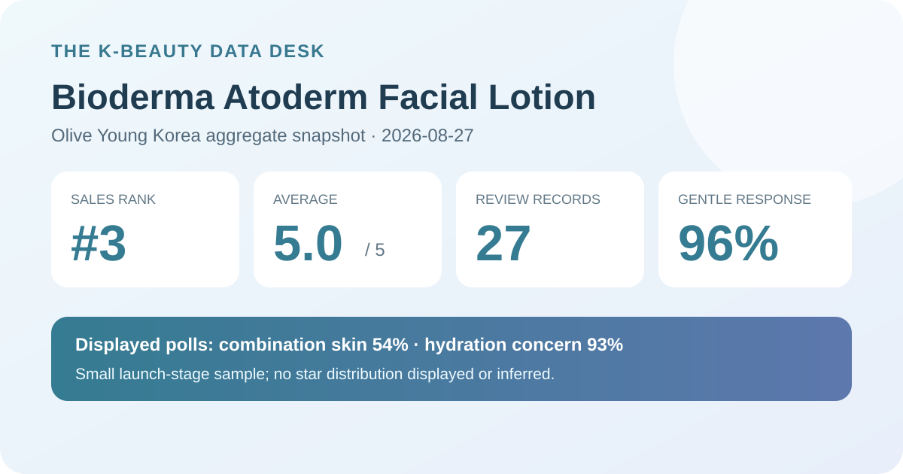
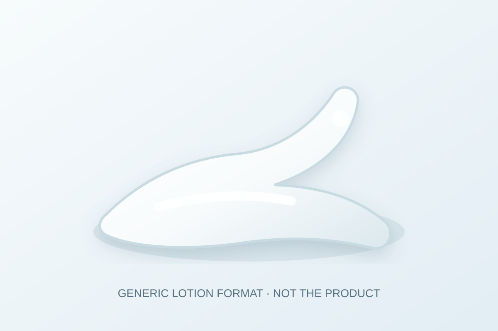

Data captured August 27, 2026. This article uses only the retailer's displayed product title, sales rank, aggregate rating, review count, survey shares, and dated price display. No individual review, reviewer name, product photograph, or user photograph is reproduced or translated. I did not test the product.

The short version: Bioderma Atoderm Facial Lotion ranked third in the captured skincare sales list and displayed 5.0 out of 5 from 27 review records. Its survey panel showed combination skin 54%, hydration concern 93%, and a gentle response at 96%. These are promising launch-stage retail signals, not evidence that the lotion hydrates, repairs a barrier, prevents irritation, or suits a particular person.
The narrow, defensible fact is that every rating combined into the retailer's displayed calculation produced an average that rendered as 5.0 on capture day. That is clearly positive within this retail system. It tells us more than a single launch rating, but much less than an established pool with hundreds or thousands of records.
The screen did not expose reliable shares for five, four, three, two, and one stars. A displayed 5.0 may be rounded, and several underlying distributions could produce the same visible number. This post therefore does not convert the average into a claimed 100% five-star share. Reporting an unshown distribution would create precision that the source did not provide.
Review count also does not equal a controlled sample. Participation can be shaped by who bought early, who chose to submit feedback, incentives, campaign visibility, availability, and the retailer's moderation or linking rules. The average is useful for tracking the launch, not for estimating a clinical effect or population-wide satisfaction rate.
This is the largest displayed skin-type response. It describes who was represented in the poll, not who will benefit most.
This identifies the leading selected concern. It does not measure increased skin water content or prove moisturization performance.
This is a subjective retail response, not a safety test, irritation rate, allergy assessment, or guarantee for sensitive skin.
The three percentages answer separate questions and should never be added together. The page did not show a separate respondent count for each survey, so this analysis does not assume that all 27 records answered every question. With such an early review base, one or two additional responses could visibly change a share.
A concern poll captures what respondents selected as relevant to them or how the retailer categorizes their response. It is not an instrument reading before and after application. The 93% figure cannot establish increased hydration, reduced water loss, barrier repair, longer-lasting moisture, or relief for a diagnosed skin condition.
The same distinction applies to the Atoderm name and any storefront campaign language. A product family name can help identify the listing, but it cannot substitute for evidence about outcomes. This article does not turn a retail label, sales rank, or shopper response into a medical or clinical claim.

The retailer classifies this item as a facial lotion. That supports a format label only. I did not open or apply the formula, so this analysis cannot confirm color, scent, fluidity, richness, spread, absorption time, tack, residue, pilling, or compatibility with sunscreen and makeup.
The local illustration is deliberately brand-neutral. It is a visual explanation of a lotion category, not a reconstruction of the product. If finish matters, test the actual formula in the routine and climate where it will be worn. Amount, waiting time, humidity, sunscreen film, and makeup can all change layering behavior.
Rank three describes recent sales prominence inside one retailer, one category, and one captured moment. It does not mean third-best for all shoppers. This listing had an official-launch label, a discount, a pouch set, and gift messaging, all of which can affect early sales momentum and visibility.
Ranking and review volume answer different questions. The rank indicates recent commercial activity; the 27-record pool indicates that public feedback was still developing. A new listing can rise quickly before the evidence base matures. The responsible next step is to watch whether the count grows and whether the average and surveys remain similar, not to treat launch position as product performance.
The Korean listing displayed a ₩36,000 reference price and a ₩25,400 sale price for a 150 ml promotional set with a pouch. The storefront also showed a basis of ₩16,933 per 100 ml. These were dated display figures, not a permanent price guarantee.
Before comparing value, confirm the selected item, total volume, gift availability, coupon eligibility, seller, shipping, returns, expiry information, and checkout total. A free pouch may improve the appeal of a launch set without changing the value of the lotion itself. Regional listings can differ in name, pack, label, formula, price, and seller.
This analysis did not independently capture and reconcile a complete current ingredient list across regions. It does not estimate ingredient percentages or claim that the lotion is fragrance-free, alcohol-free, essential-oil-free, non-comedogenic, pregnancy-compatible, or appropriate for eczema, rosacea, acne, allergy, broken skin, or another medical concern.
Check the current package for the exact market and item received. When a known allergy, skin condition, active treatment, or prior serious reaction makes the decision higher stakes, qualified advice is more appropriate than a retailer average. A small-area trial and introducing one new product at a time may make a concerning response easier to identify, but neither guarantees safety.
It accurately describes the retailer's display on the capture date, but 27 records are still a small, changeable base and no star distribution was exposed.
Combination skin led the displayed poll at 54%. That is sample representation, not proof of superior fit or performance.
No. It is a subjective early retail response without a separately displayed poll denominator, not a safety assessment or prediction for an individual.
No. It records a selected concern and does not measure a change in hydration or barrier function.
No. It is a generic code-drawn format visual, not a product or user photograph and not evidence from testing.
Bioderma Atoderm Facial Lotion was the highest-ranked valid unpublished candidate after the covered Hydrabio product family and Innisfree Retinol Cica Pore Ampoule were skipped. The ranking and product titles matched, and the product header and review tab agreed on 5.0 stars and 27 records.
The defensible conclusion is encouraging but early: the listing launched with strong sales visibility, a perfect displayed average, and high hydration-concern and gentle-response shares. The small record count, missing star distribution, and unknown survey denominators sharply limit interpretation. Verify the exact pack, current label, price, and personal tolerance independently.
← All reviews · Rankings · Skin-poll guide · Methodology
Published by The K-Beauty Data Desk · Aggregate data captured 2026-08-27. No individual review, name, product photo, or user photo is reproduced or translated, and I did not test the product. I received no free product and am not paid or approved by the brand. Check the dated source listing.
Data basis: the live Olive Young Korea skincare sales-ranking and product/review screens captured 2026-08-27. The product title, ranking position, rating, review count, price display, and poll shares are source facts. Interpretation and cautions are editorial.